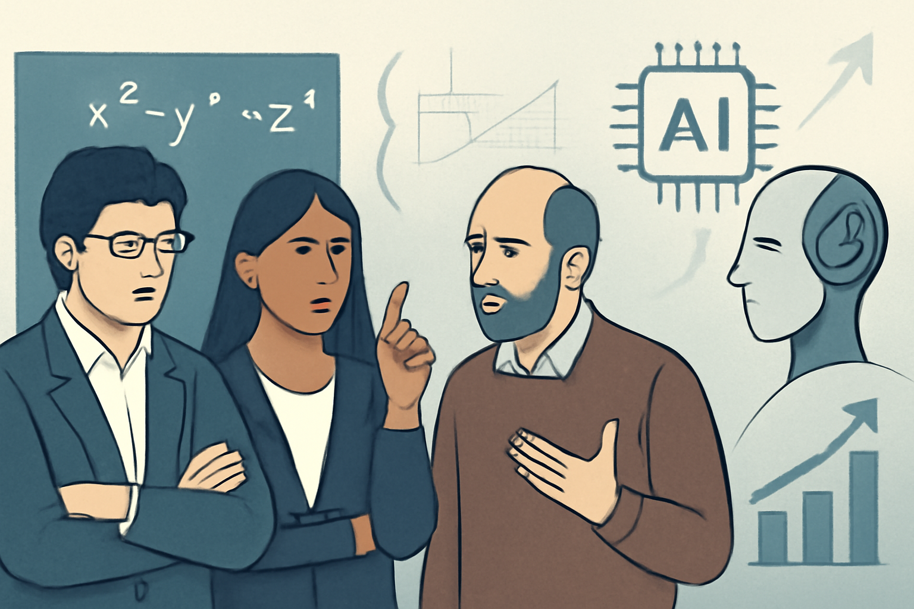

08 mathandai.org 게시일 2026.09.11
수학자들, AI 수학 경쟁에 공개 경고

이 글은 새 모델 발표가 아니라 선언문이다. 주제는 AI가 수학 문제를 잘 푸는 현상 자체보다, 그 성과를 어떤 방식으로 쓰고 평가하느냐다. 서명자들은 수학의 목표가 정답 생산이 아니라 개념 이해와 방법의 전승에 있다고 본다. 그래서 기업의 벤치마크 경쟁이 공동체의 목표와 충돌한다고 비판했다.
핵심 브리핑
선언문은 최근 몇 달 사이 LLM의 수학 능력이 크게 높아졌다고 전제한다. 일부 모델은 여러 수학 분야의 큰 난제를 풀 수 있을 정도라고 적었다. 그러나 서명자들은 이 성과를 벤치마크 경쟁으로 밀어붙이는 방식이 수학과 수학 공동체에 해롭다고 주장한다.
선언문의 핵심은 목적의 불일치다. 수학에서는 유명한 문제를 푸는 일 자체보다, 그 과정에서 나온 통찰과 방법을 공동체가 토론하고 정리해 전수하는 일이 더 중요하다고 본다. 반면 AI 기업이 빠른 문제 해결과 대량 생산에 치우치면, 이 과정이 생략될 수 있다고 우려했다.
서명자들은 빠른 발표 관행도 문제로 짚었다. 서둘러 공개하면 충분한 해설 작성, 새 방법의 분리, 선행 연구 인용이 빠질 수 있다고 봤다. 이 경우 공로 귀속과 표절 문제가 커질 수 있다고 경고했다.
선언문 말미에는 필즈상 수상자를 포함한 여러 수학자가 이름을 올렸다. 이들은 수학계뿐 아니라 다른 지식 노동 분야도 비슷한 문제를 마주할 수 있다고 적었다.
방법과 결과
이 글은 실험 논문이 아니라 입장문이다. 그래서 모델 구조나 벤치마크 수치 비교는 제시하지 않는다. 대신 수학 연구의 목적을 개념 이해와 인간 사이의 지식 전승으로 규정하고, AI 활용이 그 목적을 해치지 않도록 제도와 관행을 바꿔야 한다고 주장한다.
한계도 분명하다. 선언문은 구체적 정책안이나 측정 기준을 내놓지 않는다. 특정 기업이나 모델의 사례를 세부 검증한 문서도 아니다. 다만 AI가 지식 노동의 결과물만 빠르게 생산할 때 생기는 부작용을 정면으로 문제 삼았다.
업계의 움직임
발췌에는 기업의 공식 답변이나 경쟁사 대응이 담기지 않았다. 필즈상 수상자 다수가 서명해 학계 안팎의 관심은 큰 편이다. 아직 공개된 반응은 확인되지 않았다.
시사점과 체크포인트
우리 회사는 AI 성능을 볼 때 정답률만 보면 안 된다. 문서 작성, 심사 의견, 분석 보고서처럼 지식 노동이 많은 업무일수록 검증 과정과 책임 귀속이 중요하다. 산출물을 빨리 만드는 도구가 학습과 검토 체계를 약화시키지 않는지 따로 봐야 한다.
검토할 팀은 현업 부서, 준법감시, 감사, 인재개발 조직이다. AI가 만든 초안을 누가 검토하는지, 선행 자료 인용은 어떻게 남기는지, 직원 역량 축적은 어떤 방식으로 유지할지 기준이 필요하다. 교육 과정에서 사람이 문제를 풀며 배우는 단계를 얼마나 남길지도 결정해야 한다.
주의할 점도 있다. 이 선언문은 규범적 주장이다. 사실 판단과 정책 설계에는 별도의 실증 자료가 더 필요하다.
주요 용어
원문 정보
제목: A misalignment of AI in mathematics
게시일: 2026.09.11
출처 URL: https://mathandai.org/